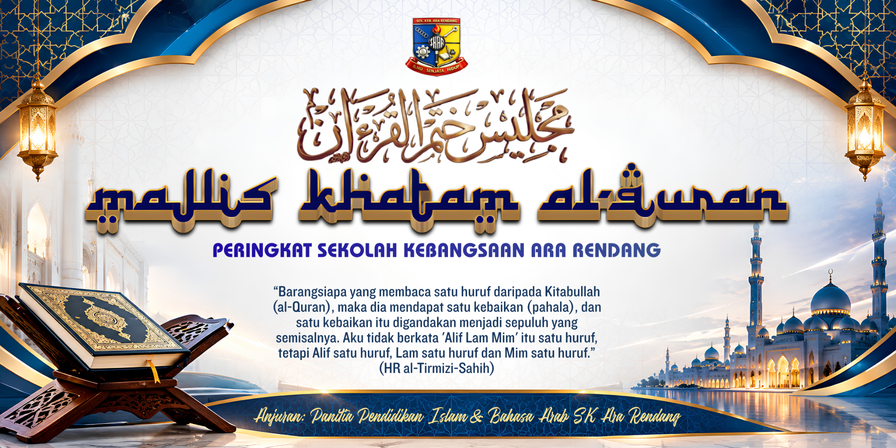

Perarakan masuk peserta Khatam Al-Quran
Diiringi barisan pentadbir.
SEKOLAH KEBANGSAAN ARA RENDANGMajlis Khatam
MAJLIS ILMU · GENERASI AL-QURAN
Majlis Khatam
Al-Quran Perdana
TAHUN 6 · PERINGKAT SEKOLAH · 2026
Mengangkat kalam Allah, menyemai cinta Al-Quran dan membina generasi berakhlak mulia.
TEROKAI MAJLIS ↗
۞GENERASI
AL-QURANSKAR · 2026
AL-QURANSKAR · 2026
AL-QURANSKAR · 2026
Melangkah dengan cinta Al-Quran
Majlis tahunan bagi meraikan murid-murid Tahun 6 yang telah menyempurnakan pembelajaran 30 juzuk Al-Quran di SK Ara Rendang.
30JUZUK AL-QURAN2026TAHUN PENGANJURANSKARSEKOLAH KEBANGSAAN ARA RENDANG
PUSAT MAKLUMAT MAJLIS
Terokai setiap bahagian
Atur Cara
Rabu · 18 November 2026 · Dewan Al-Farabi, SK Ara Rendang
Aluan Pengacara Majlis
Bacaan Doa
Ucapan Guru Besar
Taklimat Ringkas oleh Khalifah Khatam Al-Quran
Majlis Khatam Al-Quran Perdana bermula.
Penyampaian cenderahati kepada peserta Jihad Iqra’
Penyampaian sijil dan cenderahati kepada peserta Khatam Al-Quran
Sesi Fotografi
Majlis tamat dan bersurai
Nota: Waktu Bacaan Doa dan Ucapan Guru Besar dikekalkan seperti dokumen asal.
Jawatankuasa Induk
Guru Besar
PK Pentadbiran
PK Hal Ehwal Murid
PK Kokurikulum
KP Panitia Bahasa Arab
KP Panitia Pendidikan Islam
Guru Panitia Bahasa Arab · Guru Tahun 6
JAWATANKUASA PELAKSANA
| BIL. | TUGAS | NAMA | TANGGUNGJAWAB |
|---|---|---|---|
| 1 | Khalifah Khatam Al-Quran | En. Abdul Malek Bin Yusuff | Menguruskan peserta ketika perarakan masuk; mengetuai Majlis Khatam Al-Quran. |
| 2 | Bacaan Doa | En. Hilman Bin Sahak | Mengetuai doa pembukaan majlis. |
| 3 | Pengacara Majlis | En. Mustaza Bin Habin | Mengacara majlis dari awal hingga akhir. |
| 4 | Buku Program / Buku Khatam Al-Quran | Pn. Najihah Binti Abdullah; Pn. Syatriah Bt Abdul Aziz | Menyediakan pamplet dan buku panduan Khatam Al-Quran untuk guru dan peserta. |
| 5 | Siaraya | En. Mohd Suhaimi Abd. Hamid | Memastikan PA system dan mikrofon berfungsi dengan baik. |
| 6 | Teknikal & Gimik Majlis Khatam Al-Quran | Pn. Rodziah Binti Khamis; Pn. Sakinah Binti Abdullah | Menyediakan LCD/layar skrin; selawat perarakan masuk. |
| 7 | Bunga Coklat & Bunga Manggar | Pn. Noor Hasliza Binti Hassan; Pn. Noorsuryati Binti Berahim; Pn. Hartini Binti Saad | Menyediakan bunga manggar dan 3 pahar bunga coklat untuk murid dan guru. |
| 8 | Sijil Khatam Al-Quran | Pn. Noor Amira Binti Abdul Halim | Menyediakan sijil Khatam Al-Quran; melatih persembahan murid. |
| 9 | Hadiah & Cenderahati | Pn. Syatriah Binti Abdul Aziz; Pn. Noor Amira Binti Abdul Halim | Menyediakan cenderahati kepada semua peserta; melancarkan acara penyerahan cenderahati. |
| 10 | Persiapan Pentas & Peleraian / Backdrop | Pn. Zaidatul Akmar Binti Zahari; Pn. Rozita Binti Ishak | Menyiapkan hiasan pentas dan backdrop. |
| 11 | Persiapan Dewan | En. Hilman Bin Sahak; Murid Tahun 6 | Rehal: Khalifah dan 22 murid (atas pentas); karpet dan tikar (atas pentas); kerusi untuk guru dan 86 murid; meja hadiah dan cenderahati. |
| 12 | Disiplin | En. Mohd Noorhisyam Bin Ismail; Semua Guru di dewan | Memastikan murid terkawal ketika berada di dewan dan semasa majlis berjalan. |
| 13 | Jurugambar | Pn. Nurul Fazliana Binti Ismail | Mengambil gambar sepanjang perjalanan majlis. |
| 14 | Dokumentasi | Pn. Norshita Binti Ahmad | Membuat laporan selepas tamat majlis. |
Pembaca Majlis Khatam
۞
PENUTUP & PENGHARGAANSemoga Al-Quran terus mekar dalam kehidupan
Semoga Majlis Khatam Al-Quran ini dapat menambahkan semangat dan mengukuhkan penghayatan murid-murid dalam pembacaan Al-Quran serta dapat membentuk sahsiah sejati yang bertaqwa.
Setinggi-tinggi penghargaan dan terima kasih
Kepada Tuan Guru Besar, barisan pentadbir, PIBG, guru-guru dan semua yang terlibat secara langsung mahupun tidak langsung untuk menjayakan Khatam Al-Quran Perdana Tahun 6 SKAR 2026. Diharapkan kerjasama ini berterusan dan ukhuwwah sentiasa berkekalan.
PANITIA PENDIDIKAN ISLAM & BAHASA ARABSEKOLAH KEBANGSAAN ARA RENDANG